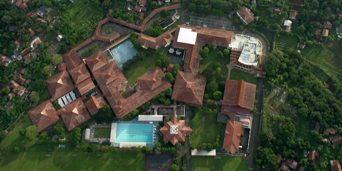

브리티시 스쿨 자카르타 빈타로 캠퍼스 · 사진: Anonymous26262626 / Wikimedia Commons, CC BY-SA 4.0
브리티시 스쿨 자카르타(British School Jakarta, BSJ) — 이름은 영국식인데 졸업은 IB입니다
1. 어떤 학교인가
브리티시 스쿨 자카르타(British School Jakarta, BSJ)는 1970년대 초 영국대사관의 지원으로 자카르타에 사는 영국·영연방 가정의 자녀를 위해 세워진 것으로 알려져 있습니다. 설립 연도는 자료에 따라 1973년과 1974년으로 갈리므로 이 글에서는 한쪽으로 단정하지 않겠습니다. 학생이 늘면서 1994년에 빈타로(Bintaro) 캠퍼스로 옮겼고, 지금 위치는 자카르타 도심이 아니라 그 남쪽 남탕에랑(South Tangerang)의 폰독아렌·빈타로 섹터 9 일대입니다. 한 캠퍼스 안에 유아 과정부터 고등까지 모여 있는 넓은 단지 형태입니다.
학교는 FOBISIA(아시아 영국계 국제학교 연맹)와 SEASAC의 회원이고, 영국 HMC(사립학교 교장단 협의회)의 국제 회원으로도 알려져 있습니다. 동시에 IB 월드스쿨입니다. 이 두 가지가 함께 있다는 점이 이 학교를 이해하는 열쇠입니다.
2. 핵심 — "British"인데 IGCSE·A-Level로 끝나지 않습니다
학교가 안내하는 학년별 과정은 이렇게 이어집니다.
· 유아 과정 — 영국 EYFS(Early Years Foundation Stage)
· Years 1~6 — 영국 국가교육과정(English National Curriculum)
· Years 7~11 — IB MYP(중등 과정)
· Years 12~13 — IB 디플로마
여기서 많은 한국 가정이 놀라십니다. 초등까지는 영국식인데, 중등에 올라가는 순간 IB 체계로 넘어갑니다. 영국식 학교라면 당연히 있을 거라고 생각하는 Year 10~11의 IGCSE와 Year 12~13의 A-Level이 학교 안내에는 나오지 않습니다. 그 자리를 IB MYP와 IB 디플로마가 채우고 있습니다.
문제는 검색해서 나오는 글이 서로 다르다는 점입니다. 학교 비교 사이트나 유학원 소개 글 중에는 BSJ를 설명하면서 IGCSE·A-Level을 함께 적어 둔 곳이 있습니다. 영국계 학교라는 점에서 그렇게 짐작했거나, 예전 정보가 그대로 남아 있는 경우로 보입니다. 학부모 입장에서는 어느 쪽이 맞는지 알 방법이 없습니다.
그래서 기준을 하나로 정하시면 됩니다. 학교 입학처가 올해 보내 주는 안내문만 믿으시고, 문의하실 때는 이렇게 물으세요. "우리 아이가 Year 10이 되는 해에, 그 학년은 무슨 과정을 이수하고 마지막에 어떤 자격을 받습니까?" 학교 이름도 계열도 묻지 마시고, 학년과 연도를 넣어서 물으시는 것이 가장 정확합니다.
3. 자카르타의 다른 선택지와 무엇이 다른가
자카르타에서 한국 주재원 자녀가 가장 많이 검토하는 또 하나가 인터내셔널 스쿨 자카르타(JIS)입니다. 두 학교는 계열 자체가 다릅니다.
| 항목 | 브리티시 스쿨 자카르타(BSJ) | 인터내셔널 스쿨 자카르타(JIS) |
|---|---|---|
| 뿌리 | 영국대사관 지원으로 설립된 영국계 | 미국식 국제학교 |
| 초등 | 영국 국가교육과정 | 미국식 초등 과정 |
| 중등 | IB MYP(Years 7~11) | 미국식 중등 과정 |
| 마지막 2년 | IB 디플로마 | 미국식 졸업장 + AP·IB 선택 |
| 학년 부르는 법 | Year 1~13 | Grade 중심 |
| 생활권 | 빈타로·남탕에랑 쪽 | 남자카르타 쪽 |
※ 두 학교의 과정 구성은 해마다 조정될 수 있습니다. 위 표는 방향을 잡기 위한 정리이고, 확정된 사실로 삼지 마시고 각 학교 입학처의 올해 안내로 확인하세요.
정리하면 기준은 셋입니다. 첫째, 대학을 어느 나라로 보고 있는가. 둘째, 아이가 2년간 과제를 꾸준히 쌓는 방식과 과목을 골라 담는 방식 중 어디에 맞는가. 셋째, 집을 어디에 구하는가. 자카르타는 교통 정체가 심해서 세 번째가 실제로는 가장 크게 작용합니다. 빈타로와 남자카르타는 방향이 달라서, 집을 먼저 정하면 학교가 거의 정해지는 경우가 많습니다. 계약 전에 통학 시간을 먼저 재 보시는 편이 안전합니다.
4. 한국(주재원) 학생이 겪는 어려움
· ① 초등에서 중등으로 넘어갈 때 평가 방식이 바뀝니다. Years 1~6은 영국식 수업이었는데 Year 7부터 IB MYP의 기준표 채점으로 옮겨 갑니다. 같은 학교를 다니는데 채점 방식이 달라지는 지점입니다. 여기서 성적이 한 번 내려앉는 아이가 많습니다. → 형성평가·총괄평가
· ② MYP는 "몇 점 맞았나"로 안 나옵니다. 과목마다 기준(criteria)이 나뉘어 있고 항목별로 매겨집니다. 열심히 썼는데 요구한 항목이 아니어서 깎이는 일이 반복됩니다. describe·analyse·evaluate가 각각 무엇을 요구하는지 모르면 노력이 점수로 안 바뀝니다.
· ③ 영어로 된 수학에서 막힙니다. 계산은 되는데 문제 지문을 못 읽습니다. 그리고 국제학교 수학은 풀이 과정을 문장으로 설명하라고 요구하는 경우가 많아, 답만 맞혀 오던 아이가 점수를 잃습니다. → 알지브라 공부법
· ④ Year 11에서 Year 12로 넘어갈 때 부담이 한 번 더 커집니다. IB 디플로마는 과목 6개에 소논문·지식이론·창의체험활동이 함께 붙습니다. MYP에서 기한 관리가 안 되던 아이는 여기서 크게 흔들립니다. → IB DP 점수 완전정복
· ⑤ 학년 중간에 들어오면 과정 차이가 그대로 드러납니다. 한국 학교나 미국식 학교에서 오면 MYP의 과제 형식 자체가 처음입니다. 영어 실력과 별개로 형식을 익히는 데 시간이 걸립니다. → 편입·전학 총정리
5. 그래서 이렇게 준비합니다
· 영어 — 회화가 아니라 학습 영어입니다. 지시어(describe·explain·analyse·evaluate·justify)를 구분하고, 주장·근거·설명 구조로 문단을 쓰는 훈련이 먼저입니다. 읽기는 교과서 지문을 요약해 말하게 하는 연습이 효과가 큽니다. → 국제학교 영어 공부법
· 수학 — 한국에서 배운 개념은 대개 충분합니다. 부족한 건 영어 용어와 서술입니다. 용어를 한국어·영어로 함께 정리하고, 풀이 과정을 영어 문장으로 적는 연습을 같이 합니다.
· MYP 과제 — 과제를 받은 주에 기준표를 함께 읽고 "무엇을 요구하는지"를 아이 입으로 말하게 합니다. 여기서 절반이 정해집니다. → 숙제·과제 관리
· Year 11 겨울 — 디플로마 과목 조합을 미리 봅니다. 대학 방향에 따라 HL로 올려야 하는 과목이 정해지고, 그 결정은 과목 신청 마감에 맞춰 내야 합니다.
6. 자카르타의 강점 — 시차 2시간, 화상과외가 잘 맞습니다
인도네시아 자카르타는 한국보다 2시간 느립니다. 자카르타 오후 4시가 한국 저녁 6시라, 아이가 학교에서 돌아온 직후에 한국 강사진과 실시간 수업을 잡을 수 있습니다. 밤을 새우거나 새벽에 일어날 필요가 없습니다.
현지에서 IB 기준표 채점을 한국어로 풀어 줄 강사를 찾기는 쉽지 않습니다. 영어 회화 수업은 많지만, 아이가 실제로 막히는 지점은 회화가 아니라 과제가 요구하는 것을 읽어 내는 일입니다. 아이의 실제 과제물과 돌려받은 채점표를 화면에 띄워 놓고 1:1로 함께 읽는 수업이 가장 빠릅니다.
정리
브리티시 스쿨 자카르타는 영국식 뿌리와 초등 과정을 가지고 있지만, 중등부터는 IB MYP, 마지막 2년은 IB 디플로마로 이어지는 학교입니다. 이름만 보고 IGCSE·A-Level을 예상하고 가시면 계획이 어긋납니다. 학교를 고르실 때는 "우리 아이가 그 학년이 되는 해에 무엇을 이수하는가"를 학년과 연도를 넣어 물어보시고, 자카르타에서는 집 위치가 사실상 학교를 정한다는 점을 계약 전에 꼭 확인하세요. 30분 무료 상담으로 아이의 현재 학년에 맞춰 무엇부터 준비할지 짚어 드리겠습니다.